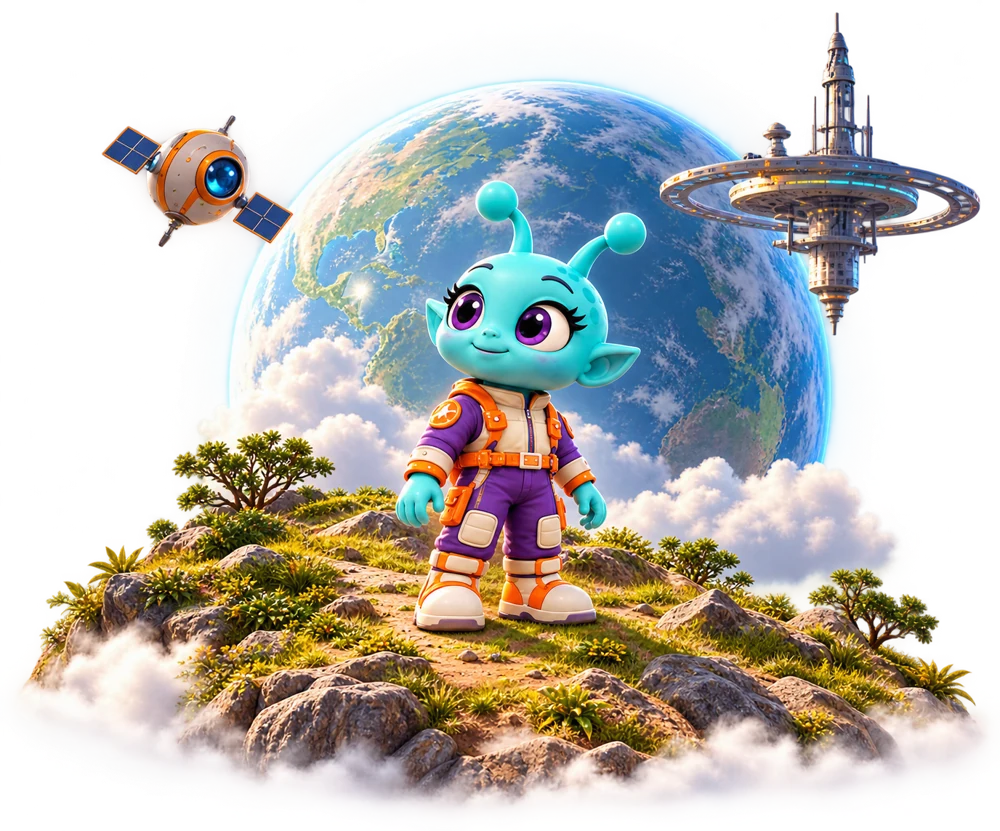
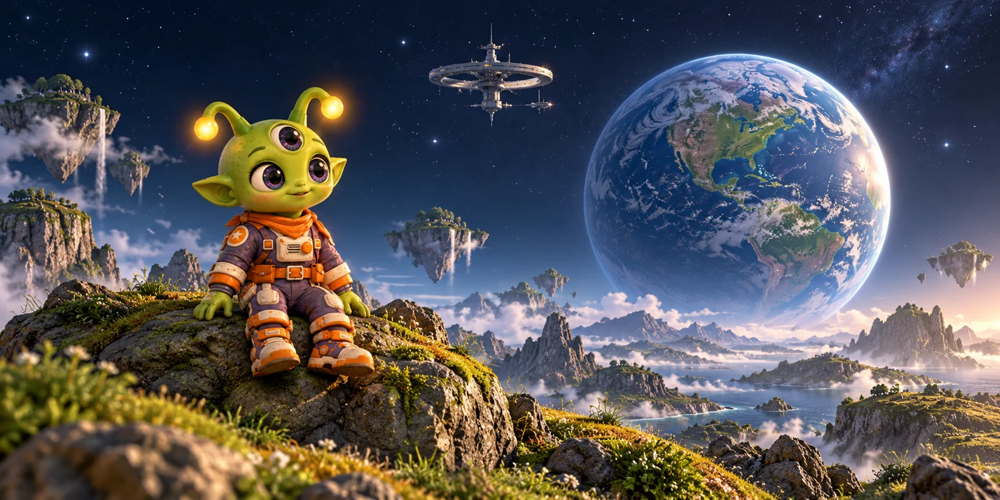

EXPLORAÇÃO
Comece uma descoberta.
Grátis por 60 dias
Um piloto para conhecer o projeto e compartilhar seu feedback.
- 1 professor responsável
- Até 2 turmas
- Até 40 alunos no total
- Experimentação dos recursos disponíveis
CURIOSIDADE EM ÓRBITA
Ciência, criatividade e desafios
para transformar o jeito de aprender.

VOCÊ DÁ O SEU TOQUE
Passe o mouse e pinte uma nova versão do AstroLearn.

Preparando seu universo…
O mesmo universo. Novas formas de explorar.
No celular, pinte com o dedo. Você também pode comparar os estilos pelos botões, sem precisar desenhar.
UMA DESCOBERTA DE CADA VEZ
O aluno entra na turma com o código do professor e encontra as missões em uma trilha de planetas. Vê o que já concluiu e qual atividade está disponível para continuar.
Instruções, materiais de apoio e o que entregar ficam na atividade. O aluno envia texto, fotos ou arquivos e pode revisar seu trabalho antes de enviá-lo.
Integrantes dividem tarefas, definem responsáveis e acompanham avisos em um espaço compartilhado. Cada aluno consegue enxergar como pode contribuir para o projeto.
O professor consulta o trabalho e os anexos, registra a nota e orienta o aluno. Entregas e devolutivas ficam no mesmo fluxo, ajudando a acompanhar o que foi feito e o que melhorar.
SOBRE O ASTROLEARN
O AstroLearn nasceu para aproximar Ciência, Tecnologia, Engenharia, Artes e Matemática da vida dos alunos. Em um universo de personagens e planetas, aprender começa com observar, perguntar e experimentar.
É um projeto acadêmico desenvolvido no SENAI para tornar a aprendizagem mais participativa, com atividades, materiais e acompanhamento do professor.
Conheça quem está nessa missãoCADA PESSOA TEM SEU ESPAÇO
Encontre as atividades da turma, consulte materiais e envie suas descobertas ao professor.
Organize turmas e atividades, compartilhe materiais, consulte entregas e registre suas devolutivas.
QUEM SOMOS
Conectamos tecnologia, criatividade e educação para construir o AstroLearn.
Instrutores: Rafael Ribas e João Paulo Lepinsk.
ESPAÇO PARA CRESCER
Uma proposta para experimentar, aprender e crescer junto.
Planos em planejamento · valores e condições em validação
EXPLORAÇÃO
Grátis por 60 dias
Um piloto para conhecer o projeto e compartilhar seu feedback.
ÓRBITA
R$ 149 /mês por escola
Proposta para escolas que querem começar com suas turmas.
GALÁXIA
R$ 299 /mês por escola
Proposta para ampliar a experiência na comunidade escolar.
Os alunos não pagam individualmente. Planos propostos para uma etapa futura: ainda não há contratação ou pagamento pelo site. A disponibilidade de cada recurso depende da conclusão e validação do projeto.
ANTES DE DECOLAR
É uma abordagem que conecta Ciência, Tecnologia, Engenharia, Artes e Matemática. No AstroLearn, essas áreas inspiram atividades e desafios que aproximam ideias e prática.
O aluno cria sua conta e usa o código de acesso compartilhado pelo professor. Cada turma tem um professor responsável, que pode acompanhar várias turmas.
A plataforma é acessada pelo navegador. O foco da experiência é computador, com adaptação para celular. Para acessar a conta e enviar atividades, é necessária conexão com a internet.
Por enquanto, não. A experiência de realismo e pixel art desta página é uma demonstração interativa dos estilos visuais do projeto.
Ainda não. Os planos e valores são uma proposta em validação com a equipe. Não há cobrança nem contratação automática. O projeto segue em desenvolvimento e avaliação.
O projeto está em desenvolvimento. Notificações, dúvidas dentro das atividades e outras integrações ainda estão sendo concluídas. A apresentação de um recurso não substitui a validação com a equipe antes de seu uso pela escola.
VAMOS CONSTRUIR ESSA ÓRBITA?
Nosso canal oficial de contato está sendo preparado. Em breve, divulgaremos aqui o endereço para conversar sobre o projeto e o piloto escolar.
Contato em preparação